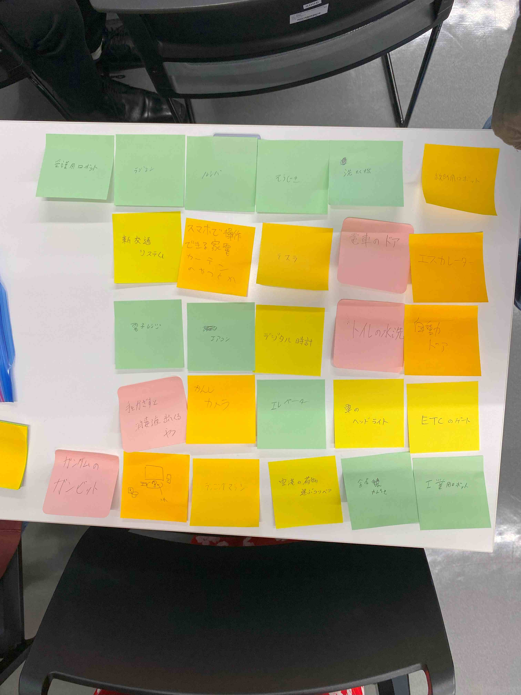
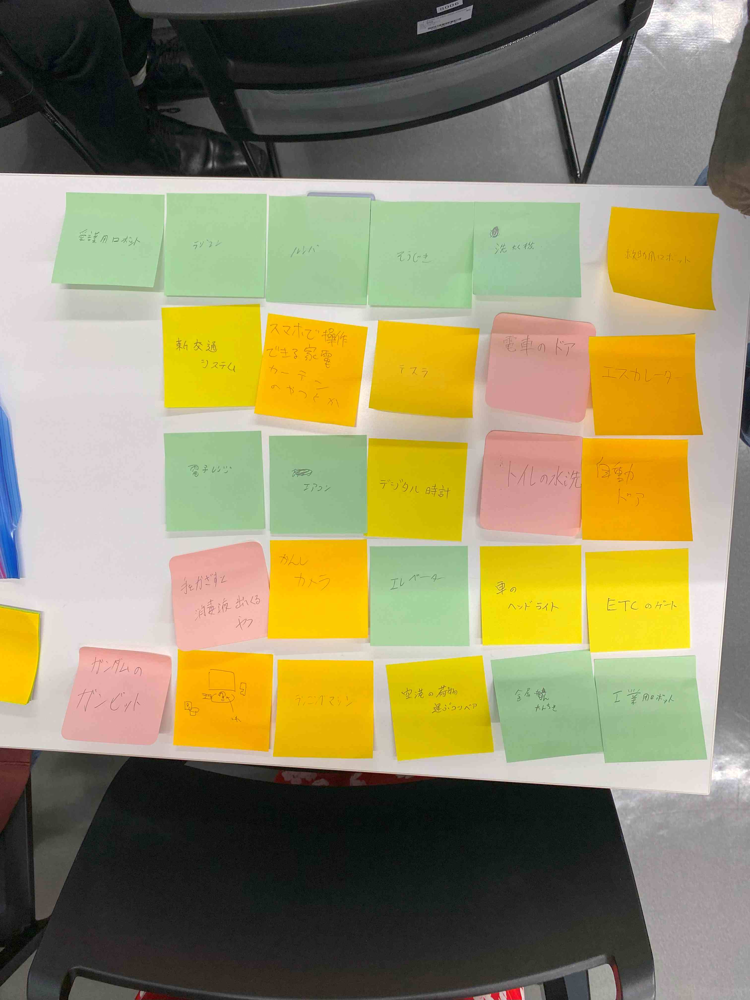
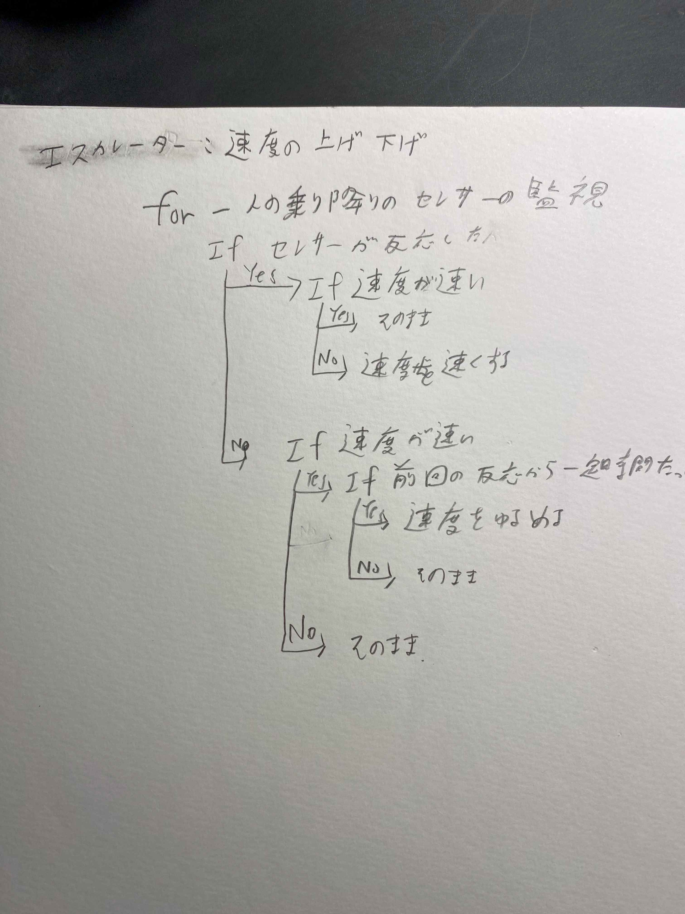
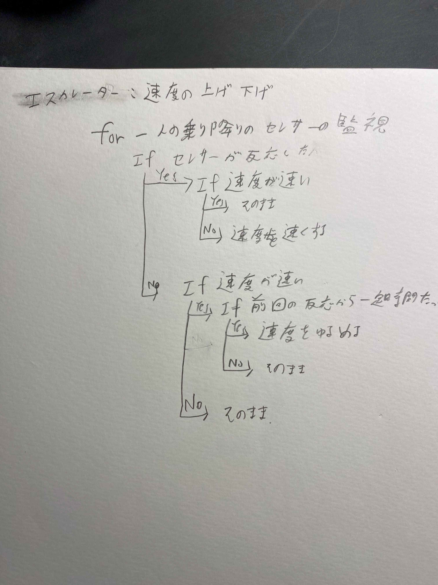
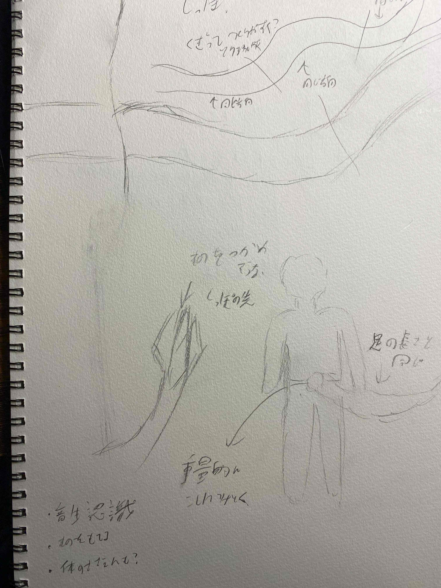
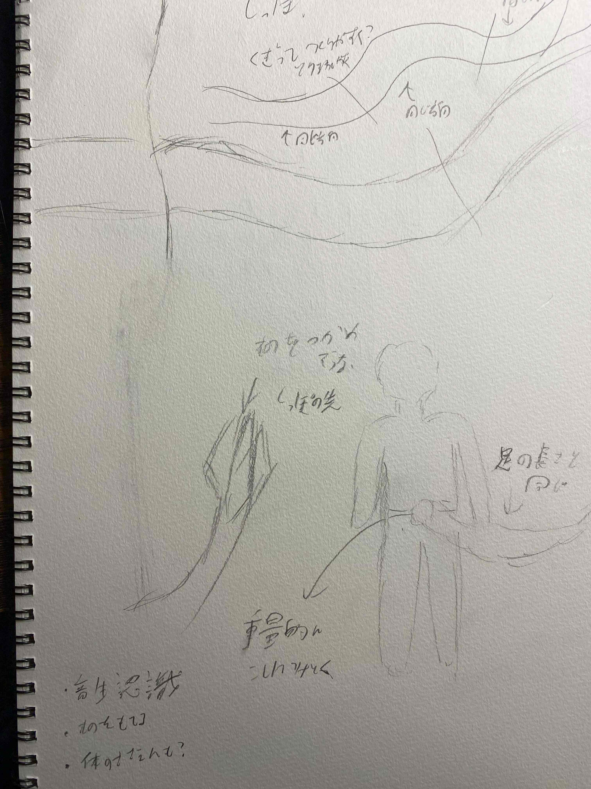

１．どんなものがあるか
グループで出し合ったポストイット画像
身近に多いように見えて思ったより少ない？

身近に多いように見えて思ったより少ない？

２．プログラム的思考で説明
ポストイットの中で選んだエレベーターの速度の増減の部分を説明


３．アイデアのスケッチ
日常生活の動作や作業を手伝ってくれるしっぽ
腰のあたりにあるかつアーム式じゃないから重心的にもかさばり的にもちょうどいい？

腰のあたりにあるかつアーム式じゃないから重心的にもかさばり的にもちょうどいい？
